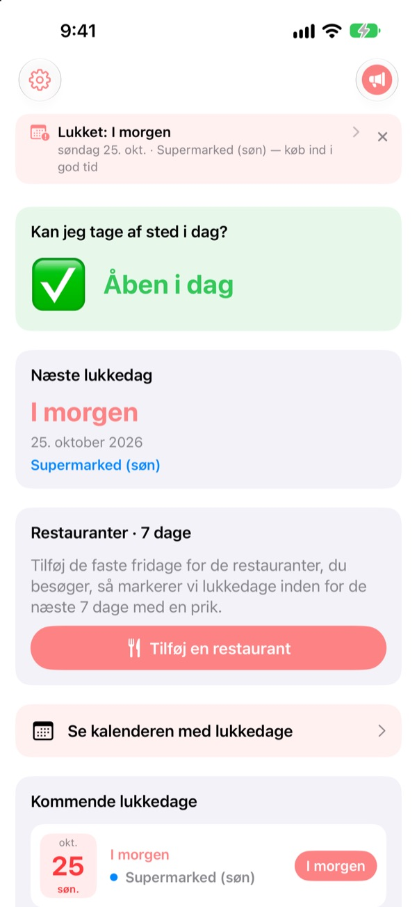
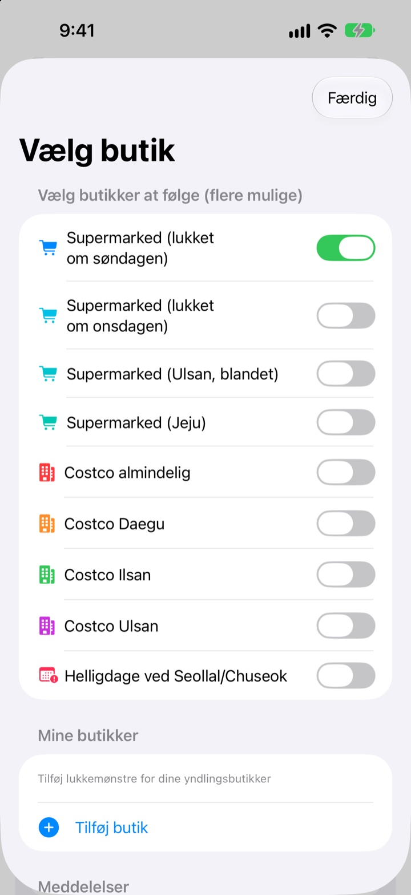
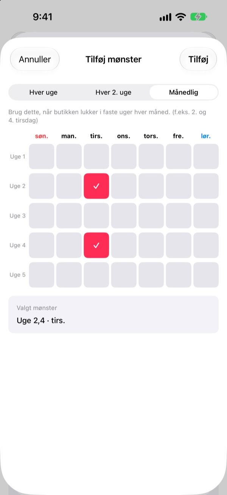
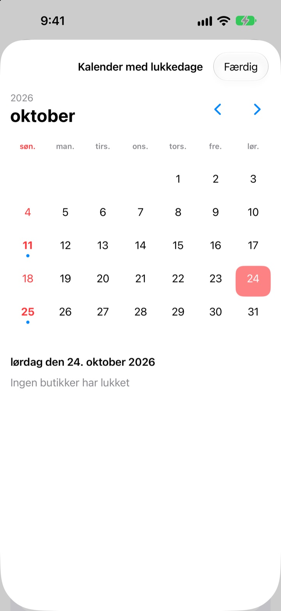
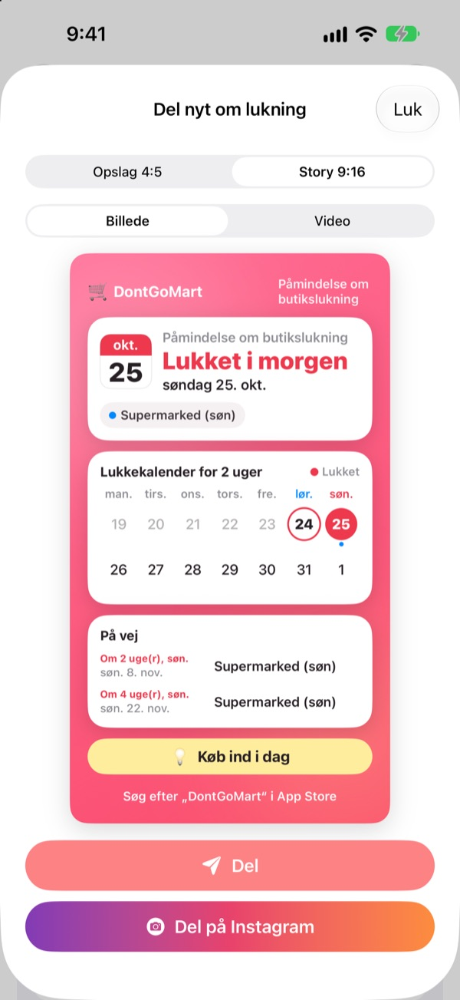

Før du tager ud og handler,
så tjek, at der er åbent
Når du åbner appen, ser du først, om dine butikker har åbent i dag. Før hver lukkedag får du en påmindelse, så du aldrig står foran en låst dør igen.
Alle funktioner er gratis. Ingen konto, ingen reklamer.

Prøv med din butik
Vælg en butik og se med det samme, om den har åbent i dag, og hvornår den lukker næste gang. Beregnet efter samme regler som i appen.
Har du stået med indkøbslisten foran en lukket butik?
Store supermarkeder i Korea skal holde lukket to dage om måneden, men hvilke afhænger af, hvor du bor. Oftest anden og fjerde søndag, andre steder onsdag, og Ulsan og Jeju har deres egne regler. Hos Costco afhænger det af afdelingen. DontGoMart regner lukkedagene ud efter dine butikkers regler og fortæller dig først, om du kan tage af sted i dag.
Rigtigt i hver region
Vælg butikker, der lukker om søndagen eller onsdagen, eller regioner med egen plan som Ulsan og Jeju. Almindelige Costco-varehuse og dem i Daegu, Ilsan og Ulsan indstilles hver for sig.
Lukning på selve Seollal og Chuseok vises også, og du kan følge flere butikker på én gang.

Din lokale butik og dine stamrestauranter
Mangler en butik på listen, så tilføj den selv: hver uge, hver anden uge eller hvilke uger i måneden og hvilken dag den lukker.
Til en restaurant indsætter du et link delt fra Naver Map eller vælger et skærmbillede af dens infoside, og de faste fridage udfyldes af sig selv. Tekst på billeder læses kun på din enhed.

Påmindelser og widgets, så du ikke glemmer
Få besked 1, 2, 3 eller 7 dage før på det tidspunkt, du vælger, og dagen før endnu en påmindelse om, at i dag er en god dag at handle.
Widgets på hjemmeskærmen og låseskærmen viser næste lukkedag, om der er åbent på søndag, og dine restauranters næste syv dage. Kalenderen viser en hel måned.

Del det på ét kort
Lav nyheden om til et kort med en kalender for to uger og et indkøbstip, og send det til familiechatten. Der er formater til Instagram-opslag og -story samt korte videoer.

Kom i gang i tre trin
- 1
Vælg dine butikker
Slå de butikker og regioner til, hvor du handler. Så mange du vil.
- 2
Slå påmindelser til
Vælg hvor mange dage før og hvornår på dagen.
- 3
Tilføj en widget
Tjek fra hjemmeskærmen eller låseskærmen uden at åbne appen.
Lukkeregler for hver butik
- Supermarked (lukket om søndagen)
- 2. og 4. søndag · de fleste regioner
- Supermarked (lukket om onsdagen)
- 2. og 4. onsdag · dele af Gyeonggi, Cheongju
- Supermarked (Ulsan)
- 2. onsdag, 4. søndag
- Supermarked (Jeju)
- 2. fredag, 4. lørdag
- Costco almindelig
- 2. og 4. søndag
- Costco Daegu
- 2. og 4. mandag · Daegu, Daegu Innovation
- Costco Ilsan
- 2. og 4. onsdag
- Costco Ulsan
- 2. onsdag, 4. søndag
- Seollal, Chuseok
- lukket på selve dagen
De lovpligtige lukkedage fastsættes af de lokale myndigheder og kan ændre sig. Passer noget ikke, så skriv til adressen nedenfor.
Ofte stillede spørgsmål
Lukkedagene passer ikke.
Lovpligtige lukkedage fastsættes af lokale regler og varierer efter region. Tjek i Indstillinger, at du har valgt den rigtige butikstype (lukket om søndagen, om onsdagen, Ulsan, Jeju osv.). Passer det stadig ikke, så send os butikkens navn og område, så ser vi på det.
Min butik er ikke på listen.
Tilføj den som din egen butik. Vælg hver uge, hver anden uge eller hvilke uger i måneden og hvilken dag den lukker, for eksempel anden og fjerde søndag.
En restaurants fridage blev udfyldt forkert.
Ved import fra et Naver Map-link skal restaurantens side angive de faste fridage. Ved et skærmbillede skal teksten om lukning være synlig. Du kan rette alt, før du gemmer.
Jeg får ingen påmindelser.
Tjek, at notifikationer er tilladt under Indstillinger > Notifikationer > DontGoMart, og at påmindelserne er slået til i appen.
Min widget opdaterer ikke.
Åbn appen én gang, så opdateres widgets. Hjælper det ikke, så fjern widgetten og tilføj den igen.
Hvad er drikkepenge?
Alle funktioner i DontGoMart er gratis. Kaffe, kage og måltid er drikkepenge til udvikleren. Bagefter får du et tak og et badge med, hvor mange gange du har givet.
Hvor spørger jeg om betaling eller refusion?
Apple håndterer køb i appen, så refusion anmoder du om på reportaproblem.apple.com. Alt andet kan du skrive til os om.
Hvordan behandles mine data?
Ingen konti, reklamer eller sporingsværktøjer, og tekst på skærmbilleder læses kun på din enhed. Se detaljer i privatlivspolitikken nedenfor.
Spørgsmål eller idéer? Skriv til hyunho.lee.1993@gmail.com. Vi svarer som regel inden for en dag eller to.